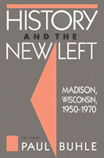

<body bgcolor="#FFFFFF" text="#000000" link="#0000FF" vlink="#CC0000" alink="#CC0000"><center><hr width="350" size="1" align="center" noshade>Essays trace the rise of an intellectual New Left from 1950 to 1970<hr width="350" size="1" align="center" noshade><p><a href="https://cdcshoppingcart.uchicago.edu/Cart/ChicagoBook.aspx?ISBN=9780877226536&&PRESS=temple" target="_top">Buy this book!</a> | <a href="https://cdcshoppingcart.uchicago.edu/Cart/Cart.aspx?PRESS=temple" target="_top">View Cart</a> | <a href="https://cdcshoppingcart.uchicago.edu/Cart/Cart.aspx?PRESS=temple" target="_top">Check Out</a></p><p></p></center><!--none//--><h1>History and the New Left</h1>
<H2>Madison, Wisconsin, 1950-1970</H2>
<h3>edited by Paul Buhle</h3>
<P>cloth 0-87722-653-9 $34.95, Dec 89, <FONT COLOR=#990033>Out of Print</FONT>
<br>paper 0-87722-836-1 $31.95, Apr 91, <FONT COLOR=#990033>Available</FONT>
<BR> 457 pp
</P><BLOCKQUOTE><I>"Buhle has assembled a rich collection of people to reflect on how that community's traditions and meeting grounds in the 1950s and 1960s interacted to shape their own creative contribution."</I>
<br>&#151<b>David Thelen</b>, <I>Journal of American History</I><I></I></BLOCKQUOTE>
<p>Madison, Wisconsin has long been known as a dynamic cultural center and focus of political-intellectual ferment in the middle of America. This collection of essays and interviews traces the rise of an intellectual New Left from 1950 to 1970 as experienced by activists and scholars with ties to the University of Wisconsin. Its thirty-two contributors, including prominent historians, journalist-scholars, and veteran political activists, re-examine their own personal histories in different eras and draw fresh, often surprising conclusions. The city and campus of Madison provide a veritable laboratory for the study of deep continuities in American dissenting thought. Photographs and cultural documents accompany these poignant, candid oral histories.
<p>The volume explores a crucial period of Madison�s intellectual life as a crossroad of history and culture. Interviews with the scholars and former students who politicized historical analysis in light of the Cold War, McCarthyism, nuclear and environmental holocaust, civil rights, and the Vietnam War, recall the debates and alliances that kept Madison in a state of ferment.
<BR>&nbsp;<h2>Reviews</h2>
<p><I>"Madison, Wisconsin, in the 1950s and 1960s was a rich soup of Wisconsin progressives, New York folksingers, socialists, and communists from all parts, actors, hyper-energetic graduate students, future film folk, culture critics&#151and above all, historians. The modern school of history-from-the-bottom-up came out of Madison. The place was probably the single most creative center of the American New Left. It was the place to be&#151as you'll see when you read the autobiographical reminiscences in this imaginative volume."</I>
<br>&#151<b>Paul Berman</b>, New York Institute for the Humanities
<BR>&nbsp;<h2>Contents</h2><P>
<p>Acknowledgments
<br>Madison: An Introduction &#150 Paul Buhle
<p><b>Part I: Cold War Days</b>
<br>1. The Smoking Room School of History &#150 Warren Susman
<br>2. Learning About History &#150 Herbert G. Gutman
<br>3. WASP and Dissenter &#150 William Preston
<br>4. I Dissent &#150 George Rawick
<br>5. Parentheses: 1952-1956 &#150 Jeffry Kaplow
<br>6. A Madison Bohemian &#150 Nina Serrano
<br>7. A Journalist Among Historians &#150 Richard Schickel
<p><b>Part II: From Old Left to New</b>
<br>8. From Liberal, to Social Democrat, to Marxist: My Political Itinerary Through Madison in the Late 1950s &#150 Bertell Ollman
<br>9. From the Labor Youth League to the Cuban Revolution &#150 Saul Landau
<br>10. Studies on the Left &#150 James Weinstein
<br>11. The Intellectuals and the First New Left &#150 James B. Gilbert
<br>12. New York Meets Oshkosh &#150 Lee Baxandall
<br>13. Another Madison Bohemian &#150 Roz Baxandall
<br>14. Civil Rights and History &#150 Harriet Tanzman
<br>15. A Way of Seeing &#150 Elizabeth Ewen
<p><b>Part III: Conflict and Consciousness</b>
<br>16. In Exile &#150 Evan Stark
<br>17. The Intellectual New Left &#150 Stuart Ewen
<br>18. Memories from the Periphery &#150 Malcolm Sylvers
<br>19. Radicalized History &#150 Peter Wiley
<br>20. Madison and Women's History &#150 Mari Jo Buhle
<br>21. A Madison Communist &#150 Paul Richards
<br>22. Neighborhood Politics &#150 Michael Meeropol and Gerald Markowitz
<br>23. <I>Radical America</I> and Me &#150 Paul Buhle
<br>24. New Left Intellectuals/New Left Politics &#150 George Mosse
<p><b>Part IV: Our Teachers</b>
<br>25. Harvey Goldberg &#150 Ron McCrea and Dave Wagner
<br>26. The Mosse Milieu &#150 Paul Breines
<br>27. The Tragedy of Hans Gerth &#150 Eleanor Hakim
<br>28. My Life in Madison &#150 William A. Williams
<p>Appendix A: The Historian�s Task &#150 Warren Susman
<br>Appendix B: The Boy Scouts in Cuba &#150 Lee Baxandall, Marshall Brickman, Danny Kalb
<br>Name Index
</P><BR>&nbsp;<H2>About the Author(s)</H2>
<P><b>Paul Buhle</b> is Director of the Oral History of the American Left Project at the Tamiment Library of New York University and teachers U.S. History at the Rhode Island School of Design. He is co-editor with Paul Buhle of <I><A HREF="1642_reg.html" TARGET="_top">The New Left Revisited</A></I> (Temple).</P>
<P>Contributors: Lee Baxandall, Roz Baxandall, Paul Breines, Mari Jo Buhle, Paul Buhle, Elizabeth Ewen, Stuart Ewen, James Gilbert, Herbert G. Gutman, Eleanor Hakim, Jeffry Kaplow, Saul Landau, Gerald Markowitz, Ron McCrae, Michael Meeropol, George Mosse, Bertell Ollman, William Preston, George Rawick, Paul Richards, Nina Serrano, Richard Schickel, Evan Stark, Warren Susman, Malcolm Sylvers, Harriet Tanzman, Dave Wagner, James Weinstein, Peter Wiley, and William A. Williams.</P>
<BR><H2>Subject Categories</H2>
<p><A HREF="/tempress/history.html" TARGET="_top">History</a>
</p>
<BR><h2 class="inpageheading">In the series</H2>
<P><I><a href="http://www.temple.edu/tempress/critical.html" onMouseOver="window.status='Click for other books in this series!'; return true;" onMouseOut="window.status=''; return true;" target="_top">Critical Perspectives on the Past</a></i>, edited by <a href="http://www.temple.edu/tempress/authors/benson_memoriam.html" target="_top">Susan Porter Benson</a>, Stephen Brier, and Roy Rosenzweig.
</p><p><i>Critical Perspectives on the Past</i>, edited by Susan Porter Benson, Stephen Brier, and Roy Rosenzweig, is concerned with the traditional and nontraditional ways in which historical ideas are formed. In its attentiveness to issues of race, class, and gender and to the role of human agency in shaping events, the series is as critical of traditional historical method as content. Emphasizing that history is itself an interpretation of material events, the series demonstrates that the historian's choices of subject, narrative technique, and documentation are politically as well as intellectually constructed.</p>
<p align="center"><a href="https://cdcshoppingcart.uchicago.edu/Cart/ChicagoBook.aspx?ISBN=9780877226536&&PRESS=temple" target="_top">Buy this book!</a> | <a href="https://cdcshoppingcart.uchicago.edu/Cart/Cart.aspx?PRESS=temple" target="_top">View Cart</a> | <a href="https://cdcshoppingcart.uchicago.edu/Cart/Cart.aspx?PRESS=temple" target="_top">Check Out</a></p><p><font face="Arial" size="1"><a href="copyright.html" onMouseOver="window.status='Web Copyright Policy';return true;" onMouseOut="window.status=''" title="Web Copyright Policy">&copy;</a> 2015 <a href="http://www.temple.edu" target="new" onMouseOver="window.status='Link to Temple University home page';return true;" onMouseOut="window.status=''" title="Link to Temple University home page">Temple University</a>. All Rights Reserved. http://www.temple.edu/tempress/titles/574_reg.html</font></p>